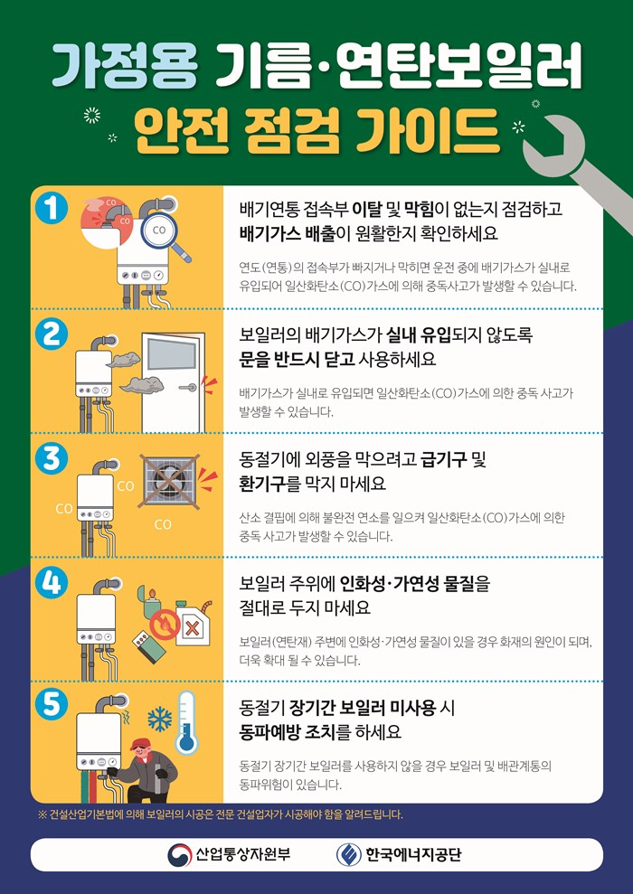

[공지] 동절기 안전점검 안내 new
동절기 정기 작업 진행 관련 안전점검 안내입니다.
안전하게 작업하세요.
동절기 작업을 위한 안전 준수 사항
① 위험요인
- 난방기구 및 전열기구 과열로 인한 화재
- 현장 내에서 피우던 불의 비산으로 인한 화재
- 동결된 폭약 취급으로 인한 폭발
- 콘크리트 양생을 위한 연료(기름, 갈탄 등) 사용 시 일산화탄소 중독 및 질식
② 안전대책
- 가설숙소, 현장사무실 및 창고 등의 난방기구 및 전열기구 상태를 확인한다.
- 유류를 사용하는 난방기구는 반드시 소화 후 주유한다.
- 난방기구 1m 주변에는 유류 및 가연성 물질이 방치되지 않도록 하고, 소화기를 주위에 비치한다.
- 난방기구 관리자를 지정하여 점심시간이나 퇴근 시 소화상태 또는 전원 차단상태를 확인한다.
- 인화성 물질은 작업장에 필요한 수량만 반입하되 구획된 저장소를 마련하여 분리보관 한다.
- 유류통에 연료량을 확인 시 손전등 사용한다.(라이터 및 성냥 사용 금지)
- 가설숙소, 현장사무실 및 창고의 출입구 주위와 인화물질 보관장소, 화기작업 주변에는 소화 설비(소화전, 소화기, 방화사 등)를 비치한다.
- 화재예방 교육을 통하여 소화기 사용방법 및 화재발생 시의 대피요령 등을 숙지한다.
- 흡연장소를 설치하고, 지정된 장소에서만 흡연하도록 조치한다.
- 콘크리트 양생을 위해 화기 또는 열풍기를 사용하는 경우 소화기를 비치하고, 질식 및 중독 사고방지를 위해 환기 설비 설치, 호흡용 보호구 지급, 작업 전 산소 및 유해가스 농도 측정 등을 실시한다.
- 사업장 내에서 작업자가 임의로 화기를 다루거나 불을 피우지 못 하도록 조치한다.
- 밀폐된 공간 내에서 도장작업 등 유기용제를 사용하는 작업을 할 경우 환기(자연환기, 전체환기, 국소배기)조치를 하고 화기사용을 금지한다
